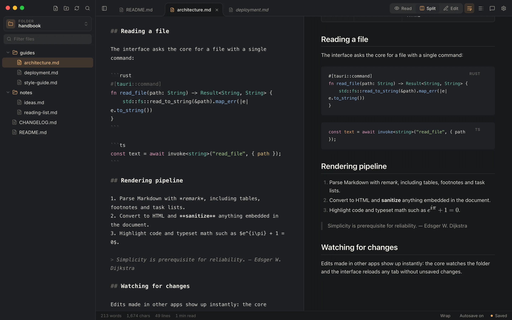
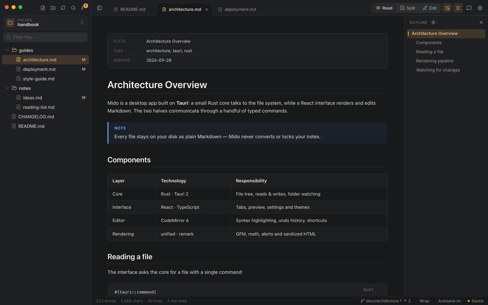
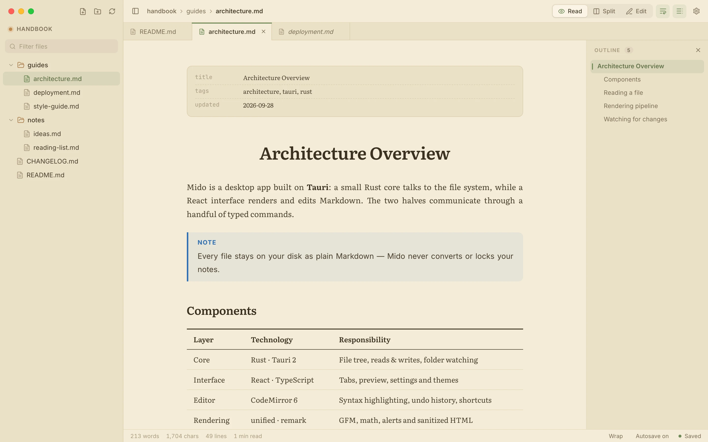
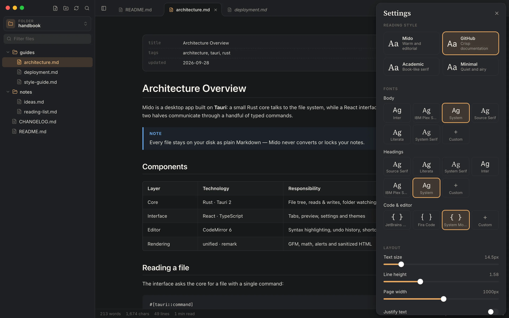

Tabs, the way you expect
A single click previews a file, a double click keeps it open. Drag to reorder, with undo history per tab.
Markdown viewer & editor for macOS
Open any folder and Mido turns your notes, docs and READMEs into beautifully typeset pages — then lets you edit them side by side, with tabs, an outline and themes that feel like home.
Free · Your files stay plain Markdown on your disk

Distraction-free, typeset pages with a navigable outline.
Source and preview side by side, scrolling in sync as you type.
A focused editor with Markdown and code highlighting.
Reading
Tables, task lists, footnotes, GitHub-style alerts, math and syntax-highlighted code render the moment you open a file. Frontmatter becomes a tidy card, and relative links and images just work.

Typography
Pick a reading style — Mido, GitHub, Academic or Minimal — then fine-tune fonts, text size, line height and page width. Use the bundled fonts or any font installed on your computer.

Themes
Eleven built-in themes, including VS Code and IntelliJ looks, plus your own: duplicate any theme, tweak its colours, and share it as JSON.
A single click previews a file, a double click keeps it open. Drag to reorder, with undo history per tab.
Browse, filter, create, rename and trash Markdown files. No database, no import, no lock-in.
Switch modes, tabs, the outline and settings without touching the mouse. ⌘B ⌘I ⌘K while writing.
Changes are saved as you type — or turn it off and save with ⌘S. Nothing is lost on close.
Start from any theme, edit nineteen colours with live preview, and import or export themes as JSON.
Built with Tauri and Rust: a ~5 MB download that starts fast and uses your system's web view.
Settings
Press ⌘, to open settings. Changes apply live, so you can see exactly how your pages will look before you close the panel.

Download
Free for macOS.
Apple Silicon and Intel
Apple Silicon IntelJust want to read? Open Mido in your browser: no install, read-only, and your files never leave your computer.
Windows and Linux versions are on the way.
Mido isn't code-signed yet. The first time, right-click the app and choose Open, or run
xattr -cr /Applications/Mido.app in Terminal.